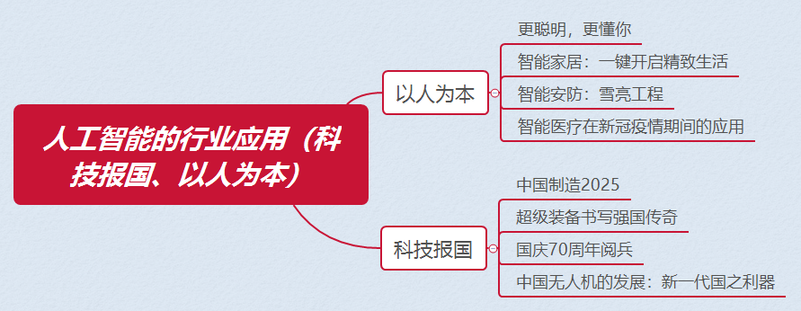

任务五 智能医疗
【任务描述】
在2020年疫情期间，搭载腾讯AI医学影像产品——腾讯觅影AI和腾讯云技术的人工智能CT设备，在湖北多家医院进行部署，帮助医护人员进行诊疗。患者做完CT检查后，设备只需几秒钟就可完成AI识别，快速检出和判别疑似新冠肺炎，自动勾勒病灶，通过自动化的统计和直方图显示，为医生快速挑出需要重点审阅的疑点，第一时间进行准确的诊断，大幅缩短医生读片时间，提升工作效率并且降低误诊率，有效缓解了疫情初期医疗资源严重不足的问题。基于“腾讯觅影”在AI+医疗探索上取得的突破，国家卫计委和国家工信部联合授予了其互联网医疗健康行业“墨提斯奖”，该奖被誉为医疗健康行业的“图灵奖”，代表着中国智能终端产业的最高荣誉。我们一起来看看人工智能在医疗领域的应用吧。
【任务实施】
5.1什么是智能医疗
人工智能的快速发展，为医疗健康领域向更高的智能化方向发展提供了非常有利的技术条件。促使智能机器和设备代替医生完成部分工作，更多地触达用户，只是智能医疗功用的部分体现。运用人工智能技术对医疗案例和经验数据进行深度学习和决策判断，显著提高医疗机构和人员的工作效率并大幅降低医疗成本，才是智能医疗的核心目标。同时，通过人工智能的引导和约束，促使患者自觉自查、加强预防，更早发现和更好管理潜在疾病，也是智能医疗在未来的重要发展方向。
在辅助诊疗方面，通过人工智能技术可以有效提高医护人员工作效率，提升一线全科医生的诊断治疗水平。如利用智能语音技术可以实现电子病历的智能语音录入；利用智能影像识别技术，可以实现医学图像自动读片；利用智能技术和大数据平台，构建辅助诊疗系统。
在疾病预测方面，人工智能借助大数据技术可以进行疫情监测，及时有效地预测并防止疫情的进一步扩散和发展。以流感为例，很多国家都有规定，当医生发现新型流感病例时需告知疾病控制与预防中心。但由于人们可能患病不及时就医，同时信息传达回疾控中心也需要时间，因此，通告新流感病例时往往会有一定的延迟，人工智能通过疫情监测能够有效缩短响应时间。
在医疗影像辅助诊断方面，影像判读系统的发展是人工智能技术的产物。早期的影像判读系统主要靠人手工编写判定规则，存在耗时长、临床应用难度大等问题，从而未能得到广泛推广。影像组学是通过医学影像对特征进行提取和分析，为患者预前和预后的诊断和治疗提供评估方法和精准诊疗决策。这在很大程度上简化了人工智能技术的应用流程，节约了人力成本。
5.2智能医疗领域的核心技术
医疗水平的提升和医疗设备的完善使得患者就诊过程会产生与日俱增的就诊数据，爆炸式信息增长让医生无法无差错的完成诊断和治疗，同时随着人们健康意识的加强，预防性和精准性治疗同时受到关注。图像识别、语音语义识别、深度学习技术在医疗领域得到广泛应用。图像识别、语音语义识别技术可充分获取患者的饮食习惯、锻炼周期、服药习惯等个人生活习惯信息以对症下药，深度学习技术可通过计算机模拟预测药物活性、安全性和副作用，降低药物研发周期，并辅助医生工作实现更精准诊断和治疗。
5.3智能医疗领域的典型企业
腾讯觅影AI辅诊开放平台是腾讯公司是腾讯首款将人工智能技术运用到医学领域的产品。它聚合了腾讯公司内部包括AI Lab、优图实验室、架构平台部等多个顶尖人工智能团队的能力，构建的由医疗机构、科研团体、器械厂商、AI创业公司、信息化厂商、高等院校、公益组织等多方参与的医疗影像开放创新平台。“AI医学影像”和“AI辅助诊断”是腾讯觅影AI辅诊开放平台的两项核心能力，其通过模拟医生的成长学习来积累医学诊断能力，可辅助医生诊断、预测700多种疾病，涵盖了医院门诊90%的高频诊断，其遵循与人类医生类似的学习过程，主要分为三个阶段：首先，其运用自然语言处理和深度学习等人工智能技术，学习、理解和归纳权威医学书籍文献、诊疗指南和病历等医疗信息，自动构建出一张“医学知识图谱”；然后，基于病历检索推理和知识图谱推理知识，建立诊断模型；最后，在人类医学专家的校验下，优化诊断模型。
微医云是国际首个专注于智能医疗的云平台，致力于打造医疗健康产业数字化、智能化基础设施，场景连接和医疗数据基础上，微医云将通过大数据、云计算、机器学习等技术，开发医学人工智能辅助诊疗系统，让家庭通过健康终端，可以享受到医疗健康服务，为政府、医疗机构、医生、医疗健康企业等提供包含互联网医院、互联网医联体、家庭医生签约、智能分级诊疗、医学人工智能辅助诊疗、云药房、数字化医药集采、智能医保控费等在内的数十种智能医疗云和医学人工智能解决方案，提升中国医疗健康服务体系整体效能。
北京康夫子科技有限公司是一家专注于人工智能技术在医疗健康领域应用研发的技术驱动型公司，凭借国际领先的知识抽取和知识推理、表示等知识图谱构建技术，康夫子成功打造了“医疗大脑”知识内核（知识图谱）。康夫子医疗大脑以数万本医学书籍、千万篇医疗论文、数十万份临床病历为基础以保证数据的科学性，同时基于千万篇医疗问答将普通公众对症状的描述和对疾病的理解准确地映射在严肃医疗平面。因此，康夫子“医疗大脑”被业界广泛评价为“接地气”的临床辅助决策和循证医学产品。
由中国平安健康医疗科技有限公司打造的 “平安好医生”以医生资源为核心，利用移动互联网平台进行医患实时沟通，包括预防保健、导医初诊、预约挂号等诊前服务，以及复诊随访、康复指导、慢病管理、用药提醒等诊后服务。自主研发的国内首个中医"智能闻诊"系统融合AI医疗科技和传统中医理论精髓，通过采集用户声音并进行AI分析，识别其是否属于气郁、气虚、阳虚等中医体质，实现听音辨病。
纪录片《戴口罩的日子》走近微医和全国医生数字抗疫的“空中战场”第三集《云起》第五集《异域同天》
【任务拓展】
通过网络等各种途径查找哪些智能医疗平台和系统助力我国新冠肺炎的防治。
思政聚焦
